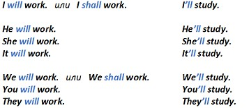
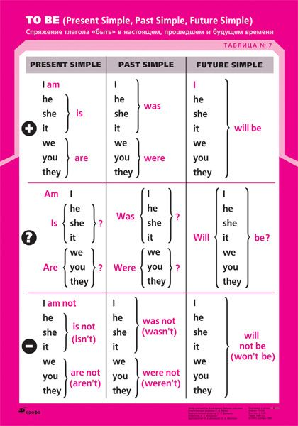

Время Future Simple Tense, употребление и образование.
Употребление Future Simple.
Время Future Simple ссылается на действие, которое совершится в неопределенном или отдаленном будущем. Это время отсылает нас в какой-то конкретный промежуток времени в будущем. Future Simple является самым простым временем по образованию и употреблению. Простое будущее время в английском языке обычно используется с обстоятельствами:
tomorrow – завтра
next year – в следующем году
in five years – через пять лет
in 2095 – в 2095 году
и т.п.
Образование Future Simple
Для того, чтобы поставить глагол во временную форму Future Simple, нужно использовать его начальную форму и вспомогательный глагол will. В устной речи will чаще всего сокращается до формы ‘ll, которая может использоваться во всех лицах.
Образование глагола "to be" также подчиняется этому правилу - к частице "will" добавьте глагол без изменений.
Это всё, что нужно знатьо Future Simple в Positive Sentence. Ознакомиться с материалом вы можете на сайте википедия.